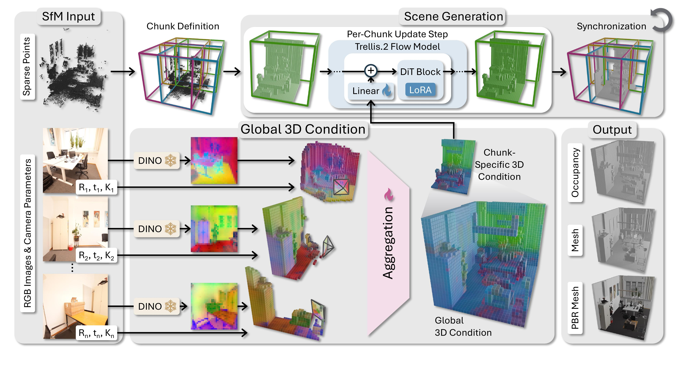

We introduce a new approach to high-fidelity 3D scene reconstruction from multi-view RGB images that tightly couples reconstruction with a strong generative 3D prior. We cast scene reconstruction as conditional 3D generation over a set of spatially-localized, overlapping chunks that together tile the scene, scaling generation to large scene extents. Crucially, we inherit the fidelity and completeness of state-of-the-art generative shape models -- we use Trellis.2 as an example -- which we generalize to the scene level. To this end, we propose a projection-based conditioning mechanism that lifts posed multi-view image features into a coherent 3D representation aligned with the generative model, independent of view ordering and spatially anchored to the scene, yielding high-fidelity, multi-view consistent generated geometry. This enables lifting the strong object-level prior of Trellis.2 to multi-view, scene-scale generation, producing faithful, editable PBR mesh reconstructions of indoor environments. As a result, we obtain high-fidelity results that outperform cutting-edge reconstruction methods by 16%.

Spacially Grounded 3D Conditioning Pathway. Standard 3D generative models take a single image and lack explicit pose control, making them unsuitable for multi-view scene reconstruction. We address this by lifting features from each input view into a shared 3D voxel grid via camera projection and aggregating them into a unified, view-order-invariant representation, so every conditioning signal is tied to a precise 3D location and directly guides pose-consistent generation.
Scene Reconstruction Pipeline. At inference time, we first recover camera poses from the input images and partition the scene into overlapping 3D chunks. We then construct a global 3D conditioning grid from all views and generate all chunks jointly in a shared latent space, enforcing consistency across chunk boundaries throughout the generative process. The resulting fused latent is finally decoded into a complete, high-quality scene mesh with PBR materials.
Given a sparse set of RGB images, GenRecon reconstructs a high-fidelity PBR mesh enabling realistic relighting and editing in standard rendering pipelines.
Drag the slider to compare each method (left) against the scan (right).
While the baslines produce noisy or oversmooth surfaces for challenging areas and are incomplete in occluded and unobserved areas, our approach yields complete and high-fidelity reconstructions from 8 input images.
@article{schmid2026genrecon,
author={Schmid, Katharina and von L{\"u}tzow, Nicolas and Hladk\'y, Jozef and Dai, Angela and Nie{\ss}ner, Matthias},
title={GenRecon: Bridging Generative Priors for Multi-View 3D Scene Reconstruction},
year={2026},
eprint={2605.23888},
archivePrefix={arXiv},
primaryClass={cs.CV},
url={https://arxiv.org/abs/2605.23888},
}